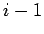

Gitterzellen zu den Ecken
Als nächstes wird eine Liste der an die gefundenen Ecken angrenzenden Würfel erzeugt. Da davon ausgegangen werden kann, dass der Zellindex der  -ten Ecke größer ist als der der (
-ten Ecke größer ist als der der (
)-ten, wurde der Würfel, der von der -ten Ecke und
aufgespannt wird, noch nicht erzeugt und kann so ungeprüft als neuer Würfel in eine Würfelliste aufgenommen werden. Jeder andere an die -te Ecke angrenzende Würfel könnte bereits als solch ein ungeprüft aufgenommener Würfel in der Liste vorhanden sein.
Unterabschnitte
Leo Wandersleb
2005-01-17